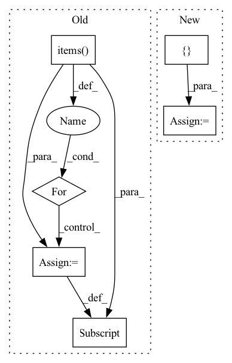

Pattern ID :29574
Before Change
metric = metric_cls(device=self.device)
if isinstance(self.calculated_metrics[metric.name], dict):
metrics_summary[metric.name] = {}
for k, v in self.calculated_metrics[metric.name].items():
metrics_summary[metric.name][k] = np.nanmean(
self.calculated_metrics[metric.name][k]
)
else:After Change
def get_scores(self, metrics):
Returns the specified metrics
result = []
for metric in metrics:
result.append(getattr(self, metric)())
return result
In pattern: SUPERPATTERN
Frequency: 5
Non-data size: 6
Instances Fragment ID: 87714395
Project Name: biasvariancelabs/aitlas
Commit Name: c5d3452f6986bb725b1e32c029e1b7b065acf4ad
Time: 2021-03-15
Author: ivan.kitanovski@gmail.com
File Name: aitlas/base/metrics.py
M Class Name: RunningScore
N Class Name: RunningScore
M Method Name: get_scores(2)
N Method Name: get_scores(1)
M Parent Class: object
N Parent Class: object
M File Name: aitlas/base/metrics.py
N File Name: aitlas/base/metrics.py
M Start Line: 38
M End Line: 51
N Start Line: 81
N End Line: 86
Before Change
// Add prefix to match DVC"s `repo.plos.show`.
// See https://github.com/iterative/studio/issues/4981
plots = {f"{live.dvc_file}::{name}": plot for name, plot in plots.items()}
for name, plot in plots.items():
datapoints = _get_unsent_datapoints(plot, latest_step)
plots[name] = _cast_to_numbers(datapoints)
metrics = {live.metrics_file: {"data": metrics}}
After Change
metrics_file = live.metrics_file
if live._dvc_repo is not None:
metrics_file = _rel_path(metrics_file, live._dvc_repo.root_dir)
metrics = { metrics_file: {"data": metrics}}
plots = {
_adapt_plot_name(live, name): _adapt_plot_datapoints(live, plot)
for name, plot in plots.items() Fragment ID: 87714398
Project Name: iterative/dvclive
Commit Name: 2fd0660b0fa2ba61a18afbafcd0e9cf4067ae3ec
Time: 2023-03-17
Author: daviddelaiglesiacastro@gmail.com
File Name: src/dvclive/studio.py
M Class Name: AnonimousClass
N Class Name: AnonimousClass
M Method Name: get_studio_updates(1)
N Method Name: get_studio_updates(1)
M Parent Class:
N Parent Class:
M File Name: src/dvclive/studio.py
N File Name: src/dvclive/studio.py
M Start Line: 36
M End Line: 53
N Start Line: 50
N End Line: 69
Before Change
return self
def __invert__(self):
for key, value in self.res.items():
self.preconditions[key] = ~value
return self
def __and__(self, other):After Change
return self
def __invert__(self):
res = {
"decoded": ~self.decoded
}
return FlowDict(res)
def __and__(self, other):
res = { Fragment ID: 87714382
Project Name: hristo-vrigazov/dnn.cool
Commit Name: 465855e3e63af0f83b2af97bcca4f18208f3ce95
Time: 2020-06-28
Author: hvrigazov@gmail.com
File Name: dnn_cool/utilities.py
M Class Name: FlowDict
N Class Name: FlowDict
M Method Name: __invert__(1)
N Method Name: __invert__(1)
M Parent Class:
N Parent Class:
M File Name: dnn_cool/utilities.py
N File Name: dnn_cool/utilities.py
M Start Line: 26
M End Line: 28
N Start Line: 26
N End Line: 29
Before Change
)
graph.n_pulses = n_pulses
for key, value in labels_dict.items():
try:
graph[key] = torch.tensor(value)
except TypeError:
// Cannot convert `value` to Tensor due to its data type, e.g. `str`.
passAfter Change
if len(features):
data = np.asarray(features)[:,1:]
else:
data = np.array([] ).reshape((0, len(self._features) - 1))
// Construct graph data object
x = torch.tensor(data, dtype=self._dtype) Fragment ID: 87714383
Project Name: graphnet-team/graphnet
Commit Name: eb45a08bdcff1415775b1279be15dedcadbccf05
Time: 2021-11-11
Author: andreas.sogaard@gmail.com
File Name: src/gnn_reco/data/sqlite_dataset.py
M Class Name: SQLiteDataset
N Class Name: SQLiteDataset
M Method Name: _create_graph(3)
N Method Name: _create_graph(3)
M Parent Class: torch.utils.data.Dataset
N Parent Class: torch.utils.data.Dataset
M File Name: src/gnn_reco/data/sqlite_dataset.py
N File Name: src/gnn_reco/data/sqlite_dataset.py
M Start Line: 125
M End Line: 169
N Start Line: 116
N End Line: 161